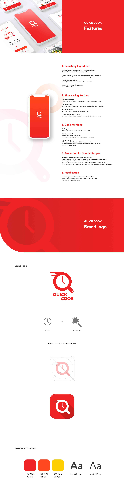
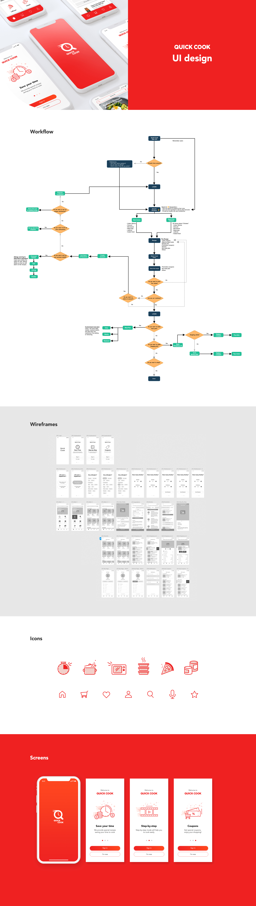

Quick Cook application
How do people have nourishing and tasty meals in modern life? This is the significantly challenging question, especially for millennial moms. Quick Cook app is launched to be dealt with that problem. The app may help them to have healthy meals in a very limited time. Quick Cook ensures Millennial moms and their families will enjoy cooking in their busy life. This project was one of the school projects. I worked on research, persona, workflow and low-fi wireframes with two members. After that, I developed this project as a whole branding.
Role
UX/UI design, Brand Identity, Animated logo

- 
- 